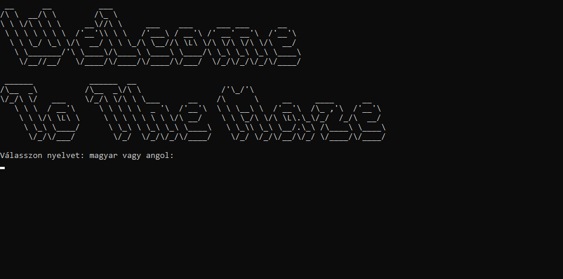
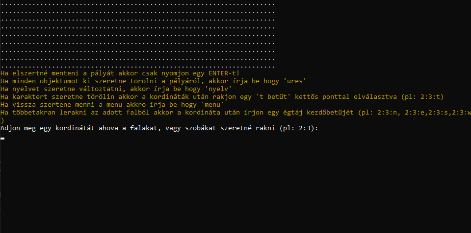

Útmutató
A program elindításakor a kovetkező képernyő fogad:
Itt választható a program nyelvezete a "magyar" vagy "angol" szavak beírásával.
A következő képernyőn lehetőség van:
- 1. térképet létrehozni
- 2. térképet betölteni
- 3. nyelvet váltani
- 4. kilépni
Amennyiben a térkép létrehozását választotta, meg kell adnia a pálya méretét, ami alapján létrehozza a pályát.
A pályára kedve szerint rakhat pályaelemeket a koordináta és az elem beírásával.
Valamint lehetőség van menteni, kiüríteni a pályát, illetve karaktert törölni.
Ha a térkép betöltését választotta, meg kell adnia a fájl nevét.
FONTOS: a pálya betöltéséhez a fájlnak a program mappájában kell lennie!